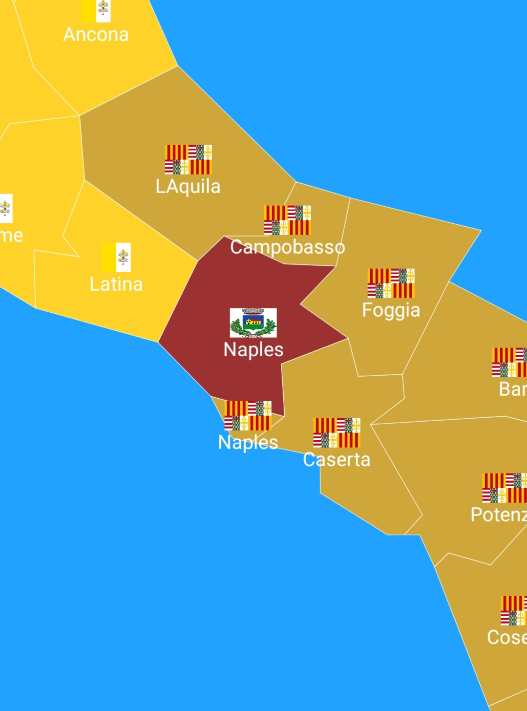
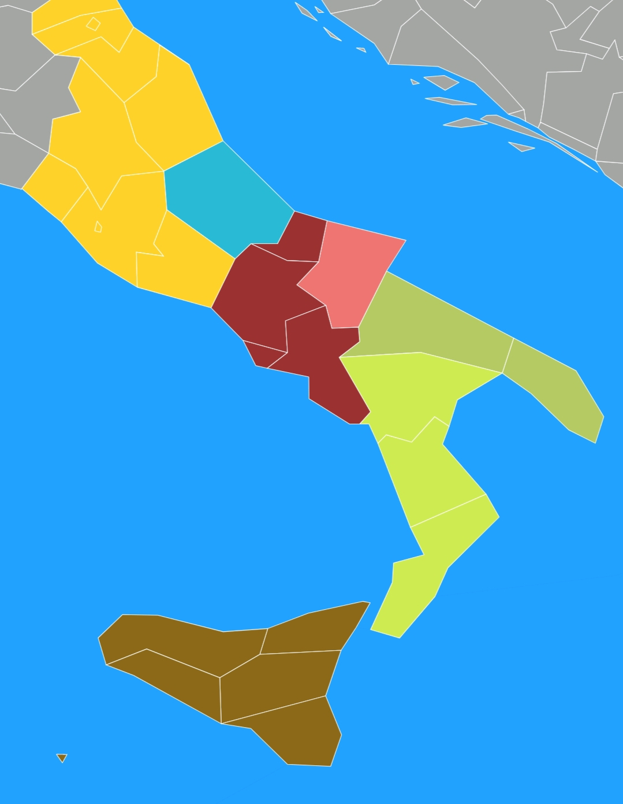

![]()


La secessione di Casoria tra il Regno di Napoli e l'Impero del Clark è forse l'evento più importante del secolo. Derivata da immensi problemi economici per colpa dei soldi sprecati per la costruzione del ponte tra Napoli e Palermo (porcaccio il Berlusca), la secessione incontrò subito l'opposizione di Carlo V detto "lo stregato". Posso solo dire che festeggiare l'Halloween da lui era molto speciale. Fatto sta che, nei mesi successivi, le rivolte popolari aumentarono fino ad una cruenta ma necessaria occupazione di tutti i seggi elettorali di Napoli: con questa manovra, i Casoriani impedirono la santa rielezione del partito 4 stelle (dovranno aspettare il 1922 per ottenere la quinta stella grazie alle recensioni positive di Mussolini), che quindi non ha potuto mandare altri 100 bonus per aiutare il meridione. Questa vicenda è culminata con la dichiarazione di secessione di Casoria che, avvenuta il 15 Gennaio, ha costretto Carlo V ad annullare la sua ennesima festa tema Halloween (per lui ogni giorno è halloween) per intervenire direttamente con il suo esercito...
Pochi giorni dopo, i Casoriani si armarono di tutto ciò che avevano trovato nei magazzini sotterranei dei Napoletani, usando poi tutte le risorse del loro territorio per guidare un loro piccolo esercito verso la conquista di Afragola, una piccola cittadina a nord, sorvegliata dalle truppe spagnole. Fortunatamente, la loro pausa pranzo permise ai Casoriani di infiltrarsi nella zona abitata ed istigare un'ennesima ribellione, che porterà alla caduta di Afragola stessa: ancora oggi le truppe Casoriane, guidate dal loro principale stratega, l'antenato dell'odierno Fratello Manna, il Gemello Manna, sono ricordate nelle leggende metropolitane di Casoria come valorosi guerrieri. La vittoria ad Afragola non era altro che figurativa più che strategica: a parte qualche antenato di Conte ucciso, il vero colpo di grazia sarebbe stata la conquista di Casavatore, un borgo piccolo e poco abitato, ma di importanza strategica importantissima. Infatti, sarebbe stato indispensabile per aprire le porte verso Napoli, il centro dell'influenza spagnola nel Sud Italia.

Ormai la secessione, iniziata con una celebre vittoria di Casoria, era appesa ad un filo: la Guerra d'Olanda, che aveva visto gli Stati Europei combattere in una grande coalizione anti- francese (la 15esima questa settimana), stava per concludersi. Ben presto le armate spagnole sarebbero tornate in patria, per poi venire inviate in Sud Italia. Il gemello Manna aveva quindi raggruppato i suoi uomini, e, dopo aver derubato gli Ottomani, presero in prestito dei cannoni d'assedio per assediare Casavatore. Furono totalmente inutili visto che Casavatore non aveva mura difensive da dover sfondare, ma i dettagli sono pur sempre importanti. L'assedio durò poco, e Manna era pronto per l'avanzata finale contro Napoli, mentre gli spagnoli, insieme alle loro mogli indigene dal Messico, si preparavano per uno sbarco con la loro flotta nei porti di tutto il meridione.

La corsa contro il tempo era agli sgoccioli, ed il Gemello Manna aveva raggruppato 300-... (Ah, questo infrange il Copyright dei "300 Spartani", di Zack Snyder, del 2007? Com'è possibile? Sembra una presa in giro. Allora dobbiamo cambiare numero... ... ...) ...600 SOLDATI CASORIANI, addestrati in questo periodo. Anche se erano pochi, erano supportati dalla popolazione locale. Grazie a questo, Napoli era già nel caos più totale, e mentre le truppe spagnole erano occupate a tenere a bada il centro città, il Gemello Manna inviò i suoi uomini, muniti dei cannoni d'assedio e le armi migliori che erano riusciti a trovare, per sconfiggere il nemico, e reclamare Napoli. Quest'ultimo atto scatenò una reazione a catena, che liberò l'intero Sud Italia dalla presenza Spagnola, dividendo l'Italia meridionale in altri regni e principati indipendenti: il Regno di Sicilia, il Granducato di Calabria e Basilicata, l'Emirato Arabo Pugliese, e le città libere che crearono lo Stato dell' Abruzzo. Infine, da Napoli, a Casavatore, da Arzano, a Caserta, il grande Regno di Casoria era stato stabilito.